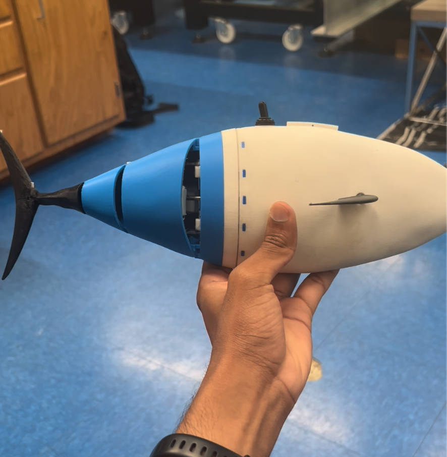
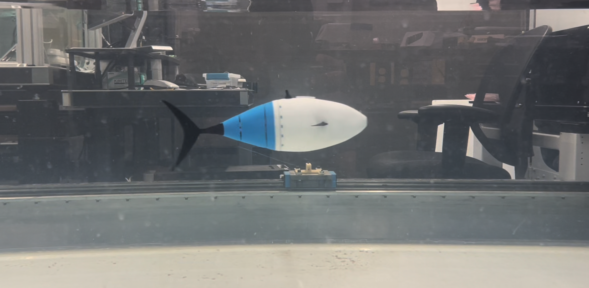

Tunabot: a bio-inspired robotic swimmer
The Tunabot is a free-swimming robotic fish designed to achieve the speed and energy efficiency of a real tuna fish. I design and fabricate components for two of the platform's robotic units in SolidWorks, printing on FDM and applying design-for-manufacturing rules so a failed part can be redesigned and back in the water the same week.
On the software side I write the Python control stack that drives the platform, and the analysis that scores it: DeepLabCut pose estimation to recover swimming kinematics from video, plus remote operation over Tailscale so tests can be run efficiently. I work with a labmate on ongoing experiments in autonomous swimming behavior.
In January 2026 I presented this work at SICB — the Society for Integrative and Comparative Biology annual meeting — as the sole presenter on a talk, Investigating the Effect of Streamwise Vortex Impingement on the Performance of a Free-Swimming Tuna-Like Robot. The question was whether a robot swimming entirely free, with no tether and no rail, can save energy by riding in the wake of another body the way a real fish does. Holding that position is the obstacle: run blind in a water channel, the Tunabot drifts into either the bluff body or the channel wall. I mounted an ArUco marker on the bluff body and used it as the reference for a vision-based controller, so the robot senses where it sits relative to the obstacle and corrects — which is what made power measurements across the wake possible at all. Even paying the energetic cost of that control, the robot comes out ahead. The paper is in progress. The work is funded by the Office of Naval Research under a MURI program on the hydrodynamics of fish schools.